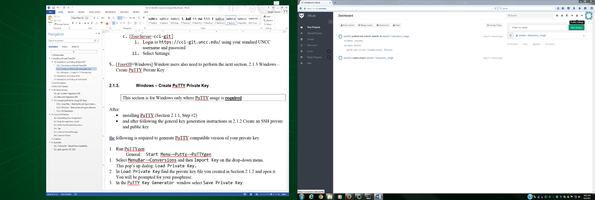
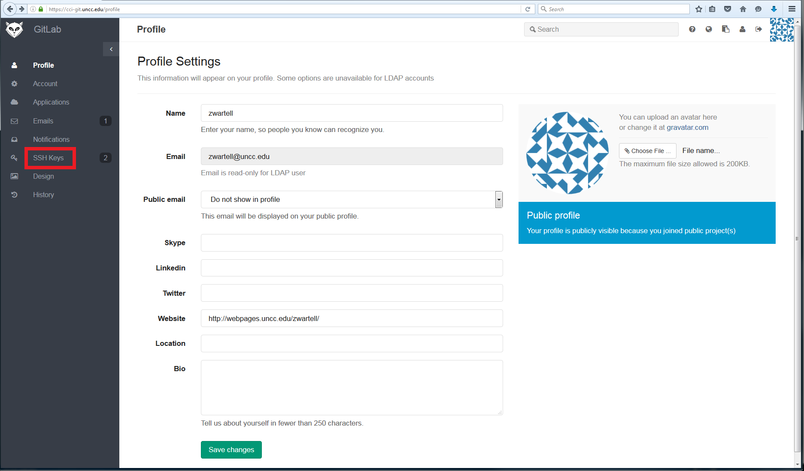
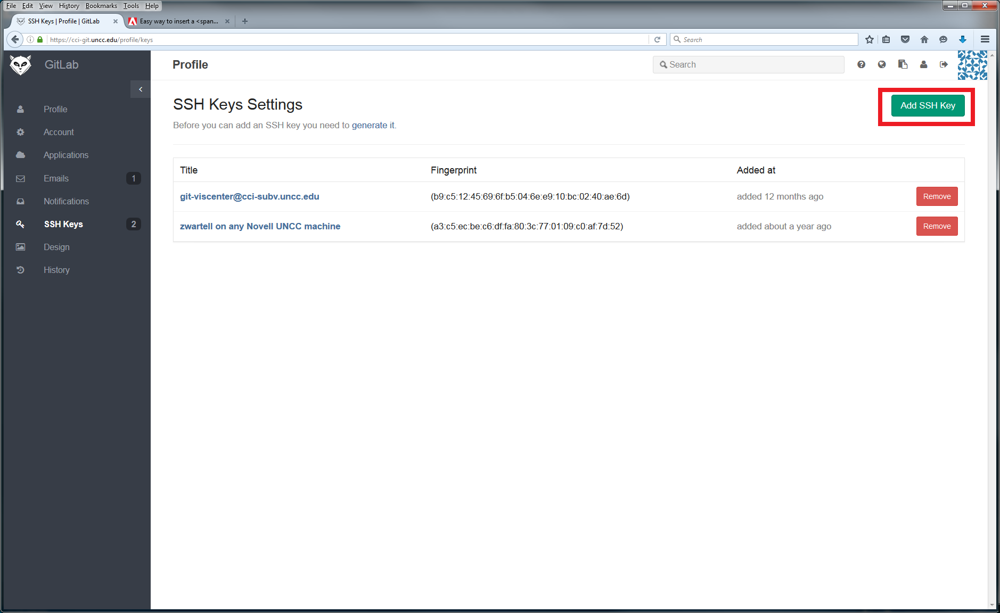
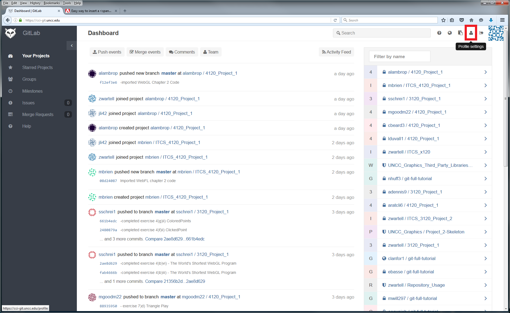

This document assumes the reader has the following
prerequisite knowledge:
Basic knowledge of Unix style command-line shell.
Note: You should understand Unix style shells at the level
discussed in [1]. #Installing_Git
discusses installing a suitable command-line shell for OS’s
that do not automatically come with one. All remaining
sections assume knowledge at the level of [1].
Knowledge of environment variables, what they are and how
to set them.
Note: You should understand environment variables at the level
discussed in [5] and specifically PATH [6]. See also [3] for
Windows and [7] for Mac specifics.
Guide to Reading
these Instructions
Various section, sub-sections and specific numbered
instructions are either “generic” or operating system specific
or Git server specific. Generic instructions apply to all
operating systems and all Git servers while specific sections
apply only specific Git servers or operating systems.
Server: Your instructor will tell you which
Git server you must use for your course work. It will be one
of the following:
cci-git.uncc.edu
git-viscenter@cci-subv.uncc.edu
bitbucket.org
Instructions that are specific to one of the above Git
servers will have the following headings:
[YourServer=cci-git]
[YourServer=git-viscenter]
[YourServer=Bitbucket]
Operating System: Your instructor will have told you
which operating systems you must use for your course work.
Instructions in this document that are specific to a
particular operating system will have the following headings:
[OS=Windows]
[OS=Linux]
[OS=Mac]
Depending on the course you are taking you may be required
to use only one designated operating system. This information
will be given to you in class.
Screen Shot Figures: Screen captures in this document
can be zoomed by clicking on the image. Click
anywhere else to return the image to it's original size.
Fonts:
your_user_id – this
indicates you should input a specific text string. The
specifics will be indicated in the instructions.
path_to_a_directory_where_you_can_save_your_work
– this indicates you should input a specific text string. It
is assumed the reader can interpret what to type based on
the context and their general computer science knowledge.
[…additional output
will appear…] – this a comment describing output
from a command-line command.
Installing Git
Git is a command-line program. Git servers uses various access
protocols for security and authorization. Depending what access
protocol your designated Git server uses you may need to have or
install additional software beyond command-line Git. You
will be told which access protocol your designated Git server
uses by your instructor. Generally, it will be either SSH or
HTTPS.
First you may need to install the Git command-line tools.
Woodward Labs: Windows computers in
Woodward labs should have both the command-line Git, OpenSSH and
TortoiseGit installed.
If you are using UNCC computers with a different operating
system please email the TA. If your designated Git server is
either Bitbucket or git-viscenter, go to #Download_and_Install_OpenSSH.
For cci-git skip to #Full_Git_Tutorial.
If you are working from a UNCC computer that already has Git
installed you can skip this section.
Instructions below vary with your operating system.
[YourOS=Windows]
Download and Install Git for Windows,
https://git-for-windows.github.io/.
This installs a minimal Unix style shell (called
‘git-bash’), the basic OpenSSH tools as well as
git. During install select the following (for any
other options given choose the defaults):
Generally, the Git instructions in this document and any Git
instructions given in this course will be given on using Git
command-line examples for generality. But many GUI Git
tools are available as well. Use of GUI Git tools is optional.
All of Section 4 is only for servers: git-viscenter and Bitbucket
This section is for Git servers that use the SSH protocol and
the SSH public-key mechanism is for security and authorization.
Your computer needs to have OpenSSH installed.
Download and Install
OpenSSH
If you are working from a UNCC lab computer that already has
Git for Windows and Putty installed, skip this section and go
to the next section.
Instructions below vary with your operating system.
[YourOS=Windows]
Download and install PuTTY as follows:
Download the Windows installer,
putty-x.xx-installer.exe, from http://www.putty.org/.
Install it.
Modify the PATH environment variable (Read
Prerequisite P2).
Add to the end of PATH the directory to where PuTTY
is installed. Typically PuTTY is at "C:\Program
Files (x86)\PuTTY".
To verify the PATH setting:
Open a git-bash shell via Start Menu→Git→Git
Bash
In the shell run plink:
lucretius@CCIWD-435B-1 ~/ITCS_4120 $ plink PuTTY
Link: command-line connection
utility
Release 0.63
Usage: plink [options] [user@]host
[command]
("host" can also be a PuTTY saved
session name)
[…misc additional output will
appear…]
[YourOS=Linux] Generally this
OS already has OpenSSH installed; if not see http://www.openssh.org/.
If you are already familiar with SSH private and public keys
and you already have a public SSH key that you use regularly,
then skip to step 4 below, but if you are using Windows still
do Section #Windows_Create_PuTTY_Private_Key
.
Key creation has to be done only once. Afterwards, you can
re-use your private key file for authorized access to the Git
server from multiple computers.
The instructions below are fairly generic to any Unix like
shell and assume basic knowledge as per Prerequisite P2.
lucretius@CCIWD-435B-1 ~/ $ cd
~/.ssh
$ ls […misc
additional output will appear…]
Check the directory listing for a file named id_rsa.pub. This file
should not exist, unless you must have previously
created a public/private key pair. If you already created
one, goto step 4. Otherwise proceed with step 3.
lucretius@CCIWD-435B-1 ~/ $
ssh-keygen -t rsa -C "your_email@uncc.edu"
[Use your
UNCC email] Generating
public/private rsa key pair.
Enter file in which to save the key
(/home/Zachary/.ssh/id_rsa): [Press Enter]
Now you need to enter a passphrase. Enter
one and write it down in a safe place. When using Git, you
will have to enter this each time you login to your
computer.
Enter passphrase
(empty for no passphrase):[Type a passphrase] Enter same
passphrase again: [reenter the
passphrase]
You will see output similar to this:
This creates two files a private key file id_rsa and a public key file id_rsa.pub. The private
key file must be kept in a secure directory and must be
available on any computer from which you plan to access
the Git server.
Securing Your
Private Key:
Best practices for private key management are that you
never store the private key on a public computer or in
shared home directories (H: drive, etc.). Rather you store
them on your personal computer(s) and on a USB device used
solely as a SSH key backup device. A reasonable way to
transfer the private key to another personal computer is
using a USB device.
If you intend to use Git on multiple, different public or
shared computers on campus, keeping the private key on a
USB stick or drive that you regularly carry is a
reasonable compromise. (If you are certain you
will never use this key again outside of one particular
course, it’s acceptable to store it on your H: drive since
the course TA will disable your Git account at the end of
the semester.)
id_rsa.pub is a plain text
file. (Some operating systems may incorrectly
identify the file as some other type of file).
Open id_rsa.pub using your
preferred text editor (such as notepad.exe,
etc.). If you ever need to copy and paste
the public key into another application (web browser, etc.)
you can do that from within the text editor.
[YourServer=git-viscenter]The file you
submit must be renamed from id_rsa.pub to your_uncc_id.pub where your standard UNCC
email is your_uncc_id@uncc.edu.
You submit your your_uncc_id.pub file via a Moodle
assignment indicated by your instructor.
Submit your Bitbucket
user id to the TA and instructor via the Moodle
assignment indicated by your instructor.
[YourServer=cci-git]
Warning: cci-git SSH protocol
is no longer recommended, see instead this document’s
Section cci-gitServer URL and
Section 5
Accessing Git Server Using HTTPS and Git Credentials
.
Login to https://cci-git.uncc.edu/
using your standard UNCC username and password. You
should then see your "Dashboard" (below). Select Profile Settings 
Select "SSH Keys" 
Select "Add SSH Key" 
Cut and paste the text from yourpublic
key file into the dialog box, give the key a title,
and press Add Key: 
then the following is required to generate PuTTY compatible
version of your private key.
Run PuTTYgen:
Start Menu→Putty→PuTTYgen
From the PuTTYgen menu bar select Conversions and then Import Key on the drop-down menu.
This pop’s up dialog: Load Private
Key.
In Load Private Key find
the private key file you created in #Create_an_SSH_private_and_public_key
and open it. You will be prompted for your
passphrase.
In the PuTTY Key Generator window
select Save Private Key.
Save the key to a file named id_rsa.ppk
in the same directory as where you stored your standard
private key file.
If Unix style shells are new for you, you should read through
[1] after you install a suitable command-line shell and
before you proceed through this section.
Read the following chapters from the ProGit book by Scott
Chacon available on-line [2].
Do the exercises in the outline below.
You can perform 99% of the exercises even without access to
the Git server, but to submit your exercises (via git push) you will need server
access.
Note: The instructions below are based on ProGit Book,
2nd Edition at
http://git-scm.com/book/en/v2/
. The instructions may conflict with other editions.
Exercise: Anywhere below that is labeled “Exercise:
Section_Name” you must actually read and do what the
section in the book instructs and save your work. You will
submit the entire set of exercises with a final git push. For some
exercises additional instructions or clarifications are given in
sub-paragraph's labeled Notes:
$ rm
HelloWorld.tar.gz [don’t need
this anymore] $ cd
HelloWorld
Exercise: “Initializing
a Repository in an Existing Directory”
Perform the instructions inside the directory HelloWorld. This will
add the provided files to a new local repo. Go ahead
and git add all the provided files to this repo.
Perform the book’s exercises. This will create
various clones of the remote repo mentioned in the
book under your git-tutorial
directory.
Read ProGit 2.2:
From the class website, download tar.gz to your git-tutorial
directory and uncompress it. Then delete
the .gz file.
Perform the exercises in Chapter 2.2 from this in that
directory:
[return to
your git-tutorial directory ]
$ pwd $ tar -xf
ProGit_Chapter_2_2.tar.gz $ rm
ProGit_Chapter_2_2.tar.gz [you can
delete this now] $ cd
Chapter_2_2
Exercise:
Using TortoiseGit, open an Explorer window and
goto the Chapter_2_2
directory. Right-click to see the TortoiseGit
shell extension commands. Test and explore the
following TortoiseGit operations from the menu:
Show Log, Check for Modifications, Repo-Browser
and Diff, Diff with previous and Help.
TortoiseGit Help “Chapter 3. Daily Use
Guide” discusses TortoiseGit (the earlier
TortoiseGit Help chapters are largely redundant
with the ProGit book)
[YourOS=Linux/Mac]
This tutorial document does not proscribe any
particular GUI Git tool. Feel free to
experiment with whatever one you
prefer. This step (iv. GUI Git Tool)
has no deliverables, so you can skip this step if
you want.
Read this tutorial’s #Git_Server_Access,
in particular read the sections corresponding to your
designated Git Server (one of 7.1 through 7.3 and then
either 7.4 or 7.5). Then use the shell you opened
based on that section’s instructions to perform the
following.
Compress git-tutorial
$ cd
parent_directory_of_git-tutorial $ pwd $ tar -zcf
git-tutorial.tar.gz git-tutorial [This
compresses the directory to a .tar.gz file] $ tar -tf
git-tutorial.tar.gz [This will
just list the .tar.gz file contents to verify
them]
Note: In real world Git usage you would never
create a .tar.gz file. But to simplify the TA’s grading of
your tutorial, we have you put all the tutorial
directories that you created (which each include multiple
local Git repo’s) into one .gz file and then you
submit the single .gz file to a single remote repo
on the Git server. (In normal usage and in all future
class projects, each local repo would be pushed to a separate
remote repo)
Create a new remote repo for submission:
[YourServer=cci-git]
Create new remote repo on cci-git called git-full-tutorial.
This is best done using the Web Browser interface to
the server. Read this tutorial’s Section #cci-gitunccedu_URL_List
and #Accessing_Git_Server_Using_HTTPS_and_Git
regarding the URL. Then read this tutorial’s
Section 8.1 instruction Item #2.a).
Remember to make sure to share
your repo with the TA and Dr. Wartell’s UNCC
accounts [Item #2.a)viii)].
[YourServer=git-viscenter]
$ git clone
git-viscenter@cci-subv.uncc.edu:wartell/ITCS_XXXX/students/John_Doe/git-full-tutorial
Cloning
into 'git-full-tutorial'...
Initialized empty Git repository in
/home/git-viscenter/repositories/wartell/ITCS_4120/students/John_Doe/git-micro-tutorial.git/
warning: You appear to have cloned an
empty repository
[..your output will differ slightly..] $ tar -zcf
git-tutorial.tar.gz git-tutorial $ rm -rf
git-full-tutorial [yes, this
is a bit silly, but to simplify common
instructions with Bitbucket, you should
delete the local repo now]
[YourServer=Bitbucket]
Create new remote repo on cci-git called, git-full-tutorial.
Read this tutorial’s Section #Bitbucket_URL_List
and Section #Accessing_Git_Server_Using_SSH_Keys
regarding the URL.
Read this tutorial’s Section 8.1 instruction Item
#2.c). Make sure to share
your repo with the TA and Dr. Wartell’s UNCC accounts.
Create local repo and link to your new remote repo:
Below, for input text remote_repo_path,
substitute the appropriate item from the following:
Move git-tutorial.tar.gz
to the new local repo directory.
Add, commit and push to the Git server’s remote repo.
Verify the Git server’s remote repository. (See
this tutorial’s Section 9.3 Verify Your Remote Repository
).
Future Work: As you progress in learning
and using Git, the next most important concept to learn is
branching. This tutorial does not include any branching
exercises. For future reference, at some point you should
finish reading ProGit Chapter 2 and then read the ProGit
Chapter 3 Git
Branching.
Micro Git Tutorial
The micro tutorial just verifies that you have full read/write
access to your remote repository on the Git server. Students
must ask the professor via email for permission to perform this
micro tutorial and skip the full git tutorial.
Read this tutorial’s Section #Git_Server_Access,
in particular read the sections corresponding to your
designated Git Server (one of 7.1 through 7.3 and then 7.4 or
7.5 as appropriate). Then use the shell you opened based on
that section’s instructions to perform the following.
Create a new remote repo:
[YourServer=cci-git]
Create new remote repo on cci-git called, git-micro-tutorial.
This is best done using the Web Browser interface to the
server. To to so, read this tutorial’s Section #cci-gitunccedu_URL_List
and Section #Accessing_Git_Server_Using_HTTPS_and_Git_Credentials.
Then read this tutorial’s Section 8.1 repo creation
instructions Item #2.a).
Make sure to share your repo with
the TA and Dr. Wartell’s UNCC accounts
[YourServer=git-viscenter]
[YourServer=Bitbucket]
Create new remote repo on cci-git called, git-micro-tutorial . This is
best done using the Web Browser interface to the server.
Review 7.3 Bitbucket Server URL and see Section 8.1
repo creation instructions Item #2.c. Make sure to share
it with the TA and Dr. Wartell’s Bitbucket accounts.
Create local repo and link to the new remote
repo:
Below, for input text remote_repo_path,
substitute one the following:
Add, commit and push to the Git server remote repo.
$ git add .
[..misc output...]
$ git commit -a -m
"-submitted git-micro-tutorial assignment"
[..misc output...]
$ git push -u origin
master
[..misc output...]
Verify your Git server’s remote repository. (See
below, Section 9.3 Verify Your Remote Repository ).
Git Server Access
This section’s subsections describe access method specifics for
various Git servers. Your instructor will tell you which server
you should use.
cci-git.uncc.edu URL List
Access cci-git.uncc.edu use
the HTTPS protocol. Below is a list of the URL’s you will
typically use. See Section #Accessing_Git_Server_Using_HTTPS_and_Git_Credentials
for instructions on accessing these git URLs.
Your user name and password for all access to cci-git is your
UNCC username and password.
Student Repository: The Git URL is: https://cci-git.uncc.edu/your_uncc_user_id/name_of_repo_you_created.git
Course Repository: The course repo’s and material
will be found at URL’s such as:
You only need to access the website via web browser when
creating new repositories and for GitLab specific
operations. Most, git operations will be
performed using the Git command-line or your preferred GUI
for Git.
git-viscenter@cci-svn.uncc.edu
URL List
Accessing git-viscenter@cci-svn.uncc.edu
uses the SSH protocol. Below is a list of the URL’s you
will typically use. See Section #Accessing_Git_Server_Using_SSH_Keys
for instructions on accessing these git URLs.
Each student (and/or team) in class has already had a
repository directory created for them. The URL of a student’s
Git repository directory is as follows.
Throughout this document, the text ITCS_XXXX
would be replaced by appropriate string for the class you are
taking. This will be announced in class.
Note, if your UNCC BANNER name contains an initial, the
initial is removed when creating the directory name of your
course Git repository URL. If your UNCC BANNER first or
last name contains multiple words, the spaces are removed from
between the multiple words in your first or last name when
creating the directory name. For example, if your UNCC BANNER
name is:
Smith, Jim B.
Then your repository URL suffix is:
students/Jim_Smith
If your UNCC BANNER name is:
Van Winkle, Jim Bob
Then your Git repository URL suffix is:
students/JimBob_VanWinkle
For team projects, all members of the team will be given
access to a team directory with a name like:
Only the Professor and TA can change access permissions for
repo’s in git-viscenter.
Bitbucket URL List
Accessing Bitbucket uses
the SSH protocol. Below is a list of the URL’s you will
typically use as well as instructions for creating a Bitbucket
account.
Each team member: Create an academic account
for yourself on https://bitbucket.org/
(If you do not already have one, of course).
Details on their Academic Account Policy are at this
Link.
It is much better than the non-academic account!
One team member should create a Private Repository
for your Project then share that repo with:
all other team members
Dr. Wartell (Bitbucket UserID: zwartell) and
TA’s Bitbucket UserID.
Instructions for setting access permission (“sharing”)
your Bitbucket repo are found the Bitbucket Website
Note, you will access Bitbucket using the ssh
protocol. This means the Bitbucket URL you should
use will be something like,
git@bitbucket.org:your_userid/your_reponame.git
The course repo’s and material will be found at URL’s such as: git@bitbucket.org:zwartell/reponame.git
Accessing Git
Server Using SSH Keys
For servers using the SSH access method, this section covers:
Starting and logging into an ssh-agent
daemon in a command-line.
Example Git operations using the Git server.
[Linux/Mac]
Starting the ssh-agent daemon
These steps much be done each time you login into a
computer if you want to access the Git server. They start
the ssh-agent daemon process which manages Git’s
authentication to the Git server.
These steps will only work after you submit you public key
to the TA and he has confirmed that it has been added to the
Git server.
Start your command-line shell
Start the ssh-agent
daemon process
This starts a ssh-agent
daemon and a new bash shell that is setup to communicate
with the ssh-agent
daemon.
Load your private key into the ssh-agent daemon.
To verify ssh-agent access:
[YourServer=git-viscenter]
This lists the repositories you have access to.
Possible Errors: If you are prompted
for a password here, your public key has not been
registered yet.
[YourServer=bitbucket]
The aboveverifiesyourssh-agent is successfully passing your key
through ssh to Bitbucket.
[YourServer=cci-git]
$ ssh
git@cci-git.uncc.edu
The server's host key is not cached in the
registry. You
have no guarantee that the server is the
computer you
think it is.
The server's rsa2 key fingerprint is:
ssh-rsa 2048
aa:32:4a:f4:4e:96:bc:cb:46:3d:b9:de:64:bc:19:ef
) [^ exact
number may differ ^]
If you trust this host, enter "y" to add
the key to
PuTTY's cache and carry on connecting.
If you want to carry on connecting just
once, without
adding the key to the cache, enter "n".
If you do not trust this host, press
Return to abandon the
connection.
Store key in cache? (y/n) [TYPE yes]
Warning: Permanently added
‘cci-subv.uncc.edu,10.18.2013.162’ (RSA)
to the list of known hosts.
Using username "git".
Server refused to allocate pty
Welcome to GitLab, zwartell. [zwartell
will be your username]
To verify read-access to the welcome repo do as
follows:
For input text welcome_repo_path
below, substitute the following based on your server::
$ $ git clone welcome_repo_path
The authenticity of host
‘cci-subv.uncc.edu’ (10.18.203.162)’ can’t
be established.
RSA key fingerprint is
e2:6f:ac:ff:a3:30:a2:0e:c2:d6:98:f4:78:55:c5:7f.
Are you sure you want to continue
connecting (yes/no)? [type yes]
Warning: Permanently added
‘cci-subv.uncc.edu,10.18.2013.162’ (RSA)
to the list of known hosts. […the
above will only appear the first time
you connect to the git-viscenter …]
Cloning into 'welcome'...
remote: Counting objects: 6, done.
remote: Compressing objects: 100% (4/4),
done.
remote: Total 6 (delta 0), reused 0 (delta
0)
Receiving objects: 100% (6/6), 5.50 KiB |
0 bytes/s, done.
Possible Errors : If you are prompted for
a password here, either the ssh-agent daemon is not setup
right or your public key has not been registered yet.
[Windows]
Starting the ssh-agent daemon
When you login into a computer from which want to connect
to your Git server, you must perform these steps once. The
steps start the ssh-agent daemon which manages Git’s
authentication to the Git server.
These steps will only work after you submit your public key
to the Git server.
These instructions allow both TortoiseGit and command-line
Git to use the same ssh-agent
daemon.
Start Pageant
Run Pageant:
General: Start
Menu→Putty→Pagent
This will create a Pageant system tray icon.
On the Pageant system tray icon, right-click and select
Add Keys from the menu.
This will open a dialog box.
Using the dialog, open your id_rsa.ppk
file. You will be prompted for your passphrase.
This starts PuTTY’s version of the ssh-agent daemon. The
ssh-agent will continue to run until you log off your
computer.
Start and Use the
Command-Line Shell
Start the Git-Bash shell: Start Menu→Git→Git-Bash
To tell git to use the ssh client compatible with
TortoiseGit type the following:
General:
Optionally to avoid the requirement of setting the GIT_SSH
variable each time you run Git-Bash, add the above line to
the .bash_profile file
(see Appendix 11.2).
To verify the Pagent ssh-agent daemon is working:
[YourServer=git-viscenter]
[YourServer=bitbucket]
[YourServer=cci-git]
To verify read-access to the welcome
repo:
For input text welcome_repo_path
below, substitute the following based on your server::
Possible Errors: If you are prompted for a
password here, either the ssh-agent daemon is not setup
right or your public key has not been registered yet.
Accessing
Git Server Using HTTPS and Git Credentials
[YourServer=cci-git]
As of September 2016, there is a problem with the server’s
SSL certificate. You must disable Git’s automatic
checking for a SSL certificate as follows:
$ git config
--global http.sslVerify false
(The above Git setting is saved on your computer, so you
only need to set it once).
To test and verify read-access to the server, clone the welcome
repo:
$ git clone
https://cci-git.uncc.edu/zwartell/welcome.git […you will prompted
for you UNCC user id and password] Cloning into
'welcome'...
remote: Counting objects: 6, done.
remote: Compressing objects: 100% (4/4), done.
remote: Total 6 (delta 0), reused 0 (delta 0)
Unpacking objects: 100% (6/6), done.
Checking connectivity... done.
Using Git Credentials
By default, the HTTPS protocol will require you to enter
your UNCC username and password everytime you
perform a remote Git operation (clone, push,
etc.). To save typing, you may use the Git
Credential Storage mechanism to avoid typing in a password
over and over again.
Note, the instructions below are a repetition of those found
in this document Section #Full_Git_Tutorial.
This section describes several operations referenced by other tutorial sections of this document. Hence, this section assumes you already have a command-line shell setup as described for your designated Git server.
Basic Git Operations
How to Clone Existing Repository
Below, for the input text git_server_url substitute the appropriate Server URL
from Section 7 Git Server Access:
How to Create New Remote Repository: Instructions below vary based on your server.
Login to the cci-git Web Server (See 7.1 cci-git Server URL)
To go the GitLab Dashboard, select New Project
Add project name as directed by your assignment’s instructions:
Select Private (pictured above).
Select Create Project (pictured above). This should display the image in the next step.
Select Settings.
Select Add Members.
Add the TA and Professor (get their UNCC user name from their email address) under People. Give both of them Reporter access in the Project Access menu. Select Add Users to Project.
The above works as long as you were give “Create” permissions under the indicated Note, git-viscenter uses the gitolite server which has a special feature that creates a remote repo if it does not already exist when you attempt to clone it. git-viscenter access permissions are managed by the TA and generally already set-up for the course
[YourServer=git-viscenter]
Select create
Here are some recommended settings (assume you name the repo MyRepoName)
Set up repo access permission (“sharing”):
If the project is a team project, add your team members.
Add the course TA and Professor get their email from class website
Dr. Wartell
Zwartell
TA
get their email from class website
Example: Example steps to populate the remote repo is by creating a local repo and performing a git push as follows:
How to Push to New Remote Repository:
To push files to a new empty, remote repository, such as one created in following Item #2 (above) do as follows. Assume the remote is called Project_Example.git:
[YourServer=cci-git]
Option I: git clone:
If you have not already created files in a local directory that you want to import, performing the following:
<INSERT CODE>
Option II: git init:
If you already created files in a local directory (call it Project_Example) and that local directory is not already a local Git repo, perform the following: (1) initialize that directory as a local Git repo and (2) push it the remote Git repo:
<INSERT CODE>
[YourServer=git-viscenter,Bitbucket]
Perform the same instructions as above, Option II, for [cci-git] but replace: https://cci-git.uncc.edu/your_user_id/
with
[bitbucket] git@bitbucket.org:your_user_id
[git-viscenter]git-viscenter@cci-subv.uncc.edu:wartell/ITCS_XXXX/students/FirstName_LastName
[YourServer=Bitbucket]
To delete a remote repo:
[YourServer=git-viscenter]
(For Windows using Git-Bash substitute ssh above with plink)
[YourServer=Bitbucket] See Bitbucket Website.
[YourServer=cci-git] See cci-git Website.
Course Git Policies
Submitting Class Assignments
Submit all your assignments by using Git add, commit and push to upload your code to your Git repository subdirectory.
Your projects will be graded based on the version of your code that is git-push’ed to the Git server at the time of the due date for the project.
Keep the repository clean!!!
It is standard practice when using version control software to not commit intermediate or output files generated by the compiler into the repository. Intermediate or output compilation files are all regenerated when someone else checkout’s the source code and recompiles it. Like all compilers MSVS 20xx C++ compiler generates lots of these (*.ncb, *.ilk, *.exe, *.obj, etc.).
Rule: Do not commit such intermediate files to your Git repository!
Fortunately, you can automate this process using the .gitignore mechanism (see [2]).
Reasoning:
Adding intermediate auto-generated files to the repository is wasteful, messy and can create subtle problems. Many intermediate files will create compilation problems if they are copied between different computers. Putting them in the repository is equivalent to such copying.
By convention, the following files should be put in the repository depending on your programming language and development tools.
C++ Code Rules
The following files should be put in the repository:
source code files (.cpp, .h, etc.)
compilation scripts or project files
Under MSVS 2010 for C++:
.vcxproj, .sln, .vcxproj.user
Under earlier MSVS versions:
.vcproj, .sln, .vcproj.<username>.<machinename>.user
a .txt file or .doc file describing what parts of the project you completed or left incomplete, etc.
any input files such as image files or other data files required by your program
any subdirectories containing the above files
When adding subdirectories, be careful not to blindly submit their entire contents because often they contain additional automatically generated files. If you make a mistake just delete the intermediate files from the repo.
JavaScript and WebGL
The following files should be put in the repository:
source code files:
.js, .html
compilation scripts or project files
at the moment our projects are too trivial to use any
a .txt file or .doc file describing what parts of the project you completed or left incomplete, etc.
any input files such as image files or other data files required by your program
of course, any subdirectories containing the above files
When adding subdirectories, be careful not to blindly submit their entire contents because often they contain additional automatically generated files. If you make a mistake just delete the intermediate files from the repo.
Verify Your Remote Repository
The TA only sees your remote Git server repo’s.
Rule: Always make sure your assignment appears as you expect in the remote repo (on the Git server).
The Ultimate Verification:
The ultimate way to verify the remote repo contains the files you think it does is to clone it into to another directory and check that second cloned copy for completeness. You should do this when you are completely done with your assignment.
Some Safety Checks:
Performing The Ultimate Verification while you are developing code is tedious. During software development the following are good practices to keep track of your commit’s and push’s.
git-status
Good Result: <INSERT CODE>
The above indicates everything is good. You have no file changes that have not been committed to the local repo and no local repo commits that have not been pushed to the remote repo.
Maybe Bad:
If you get messages like: <INSERT CODE>
then you have untracked files (but you have push’ed all your commits). This maybe ok as along as these files aren’t files that belong in a repo (such as temporary files). You might consider adding to the .gitignore file (see [2]).
Bad:
If you get a message like: <INSERT CODE>
then
then you have not pushed all your latest changes to the remote repo. Do a git-push before the final assignment deadline.
[Optional] TortoiseGit – Optionally, another good way to check with the TortoiseGit shell extension is using Check for Modifications. This will show you whether you have any changes not commited to the local repo (but make sure to check the box, Show Unversioned Files). Below we see one file is untracked. <INSERT CODE>
However, Check for Modifications will not tell you whether you have pushed all your commits to the remote repo.
For that use the TortoiseGit shell extension and select Git Sync. The following Git Sync dialog box would indicate your local repo has committed changes that you have not pushed to the git-viscenter remote:
<INSERT CODE>
However, Git Sync does not show you if you have changes to local files that you have not commited to the local repo!